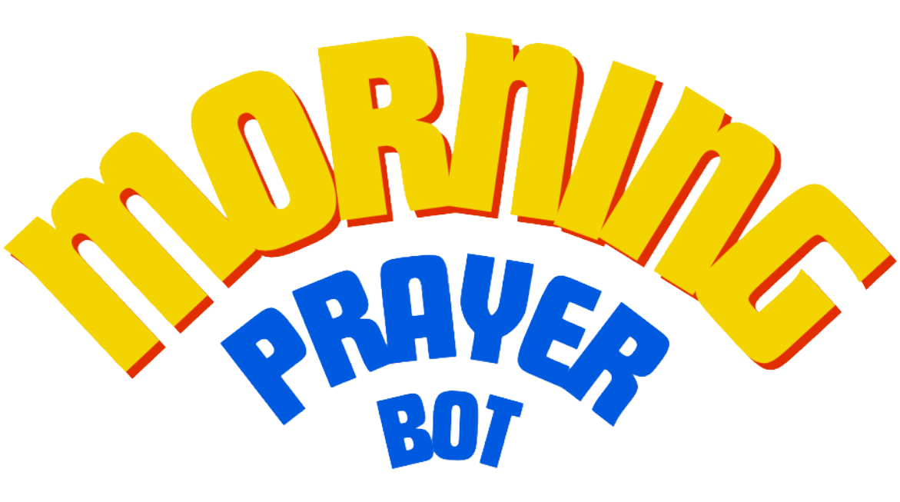

YouTube Upload
GracePrayer publishes a new daily prayer video.
Morning Prayer Bot is a lightweight iPadOS automation that monitors a YouTube prayer feed, extracts the newest video, prevents duplicates and sends the daily link to WhatsApp.

A faith-based content distribution workflow designed for reliability, simplicity and zero-maintenance daily use.
Overview
Morning Prayer Bot (MPB) is an automated iPadOS Shortcuts system that delivers daily prayer videos from YouTube directly to a WhatsApp group without manual posting. The project monitors the GracePrayer YouTube RSS feed, retrieves the latest uploaded video and sends the video link with thumbnail support through a scheduled daily automation.
Daily content sharing can become repetitive and easy to forget, especially when the same process needs to happen at a consistent time every morning.
A mobile-first workflow that checks for the newest upload, validates whether it has already been sent and automatically posts it to WhatsApp.
System workflow
The automation is intentionally simple: fetch structured feed data, isolate the latest video, check state, then send only when there is new content.
GracePrayer publishes a new daily prayer video.
The channel feed is monitored for the most recent entry.
Feed data is converted into structured JSON for Shortcuts.
The shortcut extracts title, URL, date and thumbnail data.
A saved state file prevents repeated video delivery.
The new video is shared automatically with recipients.
Features
The project uses lightweight tooling rather than a custom backend, making it easier to run, maintain and adapt from an iPad.
Runs automatically each morning through Apple Shortcuts, reducing the need for manual checking and posting.
Uses YouTube RSS and RSS2JSON to create structured data that Apple Shortcuts can process reliably.
Sends the prayer video link directly to the target WhatsApp group with support for richer preview content.
Tracks the previously sent video so the same upload is not posted multiple times.
Designed to run from iPadOS without a server, custom API or complex infrastructure.
Keeps the system easy to understand: feed input, parsing, validation and message delivery.
Architecture
The architecture focuses on minimal moving parts while still supporting feed parsing, metadata extraction, duplicate prevention and WhatsApp delivery.

Technology stack
Challenges & fixes
Future development
Allow the delivery time to be changed without editing the main shortcut logic.
Add a private notification when feed parsing fails or no video is available.
Store a small history of sent videos for easier debugging and review.
Project outcome
Morning Prayer Bot shows how practical automation can remove repetitive manual tasks while keeping the implementation simple, understandable and easy to maintain.
Explore sourceCall to action
Want to explore the implementation details and project files?
Open GitHub repo